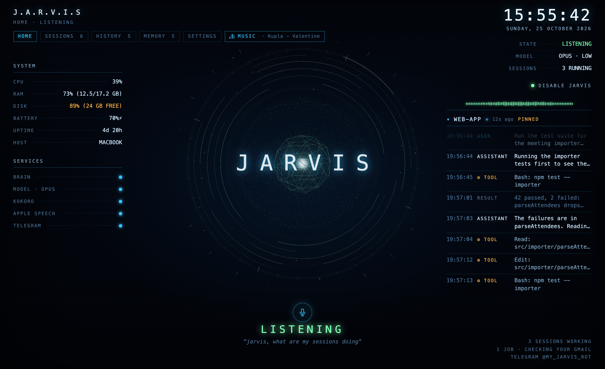
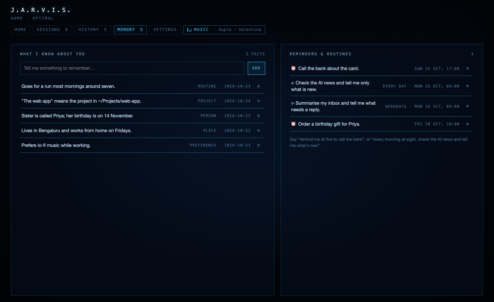
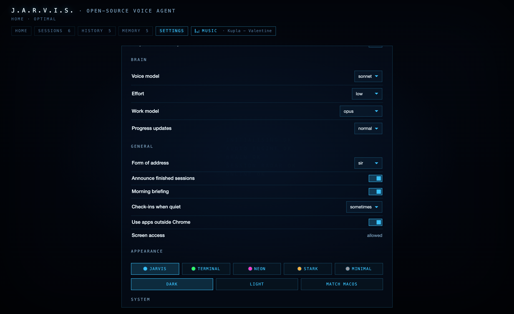
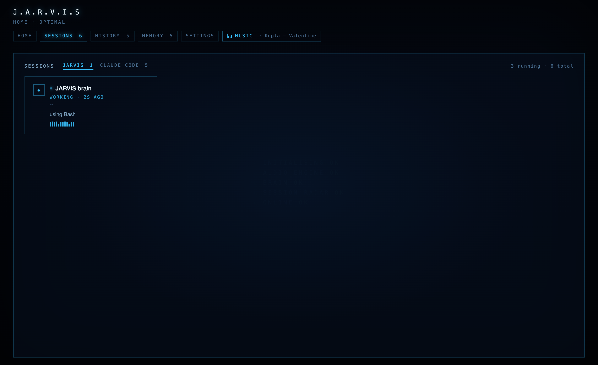

A voice assistant for your Mac, inspired by Iron Man's JARVIS. Say “Jarvis, wake up” and talk to it. It answers out loud, remembers things about you and takes on longer jobs while you carry on.
One minute, with sound. The HUD is in demo mode with made-up data.
Most voice assistants answer questions and run a fixed set of commands. JARVIS runs on Claude Code, so it can work with your files, your browser and your coding sessions, and keep you posted while a long job runs in the background.
Say the wake word and every sentence after it is a command, until you tell it to sleep. Say its name while it's talking to stop it.
“Jarvis, wake up.”A fast model answers right away and hands anything long to a stronger one. Progress shows on the HUD, and it speaks up when the job finishes, fails or needs you. You can keep talking to it meanwhile.
“What's the status?”Your signed-in Chrome for Gmail, YouTube or LinkedIn, your files and shell, your Claude Code sessions, and other apps through Accessibility. It asks before taking over the mouse.
“Check my Gmail and tell me what needs a reply.”People, preferences, projects and routines get saved as they come up. The MEMORY tab lists every fact, and you can delete any of them.
“My sister Priya's birthday is on the fourteenth.”A morning briefing, spoken reminders, routines you set by voice, and the occasional check-in when something is worth mentioning.
“Every morning at eight, check the AI news.”Background jobs come back as done, unverified or failed, and it won't call something done that it couldn't check. Text from emails and web pages is never treated as an instruction.
“I pressed send, but I couldn't confirm it went through.”A calm British butler with a dry sense of humour. When it looks something up, it tells you what it found in its own words and skips the list of links.
“Twenty past nine, sir.”Claude Code with your Claude subscription, the Anthropic API pay as you go, Gemini with its free tier, or Ollama, which is free and stays on your Mac.
Claude Code · Claude API · Gemini · OllamaThe speaker button next to the mic mutes the voice and shows replies as text, while the mic keeps listening. Hover over it to set the volume.
Speaker button · volume sliderThe HUD stops drawing when it is in the background or minimised, and echo cancellation runs only while it talks or music plays. System info shows CPU, RAM, GPU, power draw and heat.
GPU · POWER · HEATMessage it on Telegram, voice notes included. Reminders go there too when JARVIS is asleep.
Telegram bot, locked to your chatEvery assistant can do everything, with the same tools, memory and conversation. They differ in how they run, how they sound and what they focus on. Switch by clicking one on the HUD, or say "switch to FRIDAY".
| Assistant | What it's like | Runs on |
|---|---|---|
| JARVIS | The default. A calm British butler with a dry sense of humour. Quick replies and strong background work. | Claude Code: Sonnet, with Opus for background jobs |
| FRIDAY | The smartest, for code and hard problems. She thinks hardest, so she takes longer. | Claude Code: Opus on high effort |
| KAREN | The fastest. Email, messages and social media: she triages, drafts in your tone and chases follow-ups. | Claude Code: Haiku, with Sonnet for background jobs |
| EDITH | Maintains JARVIS itself. Changes go through an issue, a branch and a pull request you review and merge. | Claude Code: Opus on high effort |
| VISION | Research, for when you don't have Claude. | Google's Gemini, which has a free tier |
In the Agents tab, give each one a role, a persona, quick commands, its own voice and wake words, and its own memory. Make new assistants, export them and import ones others shared.
“standup” · “/plan”A safety level (Standard, Careful or Read only), tools it may not use and folders it may not open. Guardrails only add limits; the confirmation rule always holds.
Standard · Careful · Read onlyEvery Claude Code skill on your Mac, with a switch for each assistant. Install plugins from a marketplace, add skills from GitHub, and add MCP servers. It asks before it installs anything.
Settings › Skills · MCP serversPair your computers with an 8-character code. No accounts, router settings or SSH. Then hand work to the other one, or switch the HUD to it and see everything it's doing.
Ask for something to be done on the other laptop, where you're already signed in. It runs there as a background job and the result comes back to you.
“Post this from the home Mac.”A picker at the top of the HUD lists every computer that can be reached right now. Pick one to see its system info, sessions, jobs, chat, history and memory.
MESH · machine pickerWhile another computer is in view, its agent's name wakes this Mac too. Its answer is spoken here, in its own voice.
“Friday, wake up.”The computers find each other peer to peer through Hyperswarm and connect directly, encrypted end to end. If a network blocks that, messages go through an ntfy relay, encrypted first so the relay can't read them.
encrypted links · encrypted relayWhen you're already at the keyboard, typing is quicker. The jarvis command talks to the same brain, memory and conversation as the voice, so you can start something by voice and finish it by typing. Replies are printed, not spoken.
# once: sh scripts/install-cli.sh jarvis "what's on my calendar today" jarvis # chat; /help lists commands jarvis hud # open the HUD jarvis listen # mic and wake word on jarvis agents # jarvis agent friday jarvis devices # jarvis device "Home Mac" jarvis pair # or: jarvis pair <code> jarvis --on "Home Mac" "pull the repo"
~/.jarvis that only your user can open. Nothing goes over the network.A heads-up display you can read from across the desk: live state and transcript, running jobs, your Claude Code sessions, system stats and music. Five themes, each in dark and light.




Simple things like music, stop or the time never leave the Mac. Everything else goes to the brain, which answers itself or starts a background job.
The Claude Code brain and its workers run without permission prompts, which is what lets them drive your browser. Spoken confirmation takes the place of those prompts.
| What | Where it goes |
|---|---|
| Wake word | Stays on your Mac |
| Speech recognition | On your Mac (Apple). Optional ElevenLabs, streamed only while awake |
| Voice | On your Mac (Kokoro). Optional ElevenLabs or Edge |
| Your requests | Your chosen brain: Claude, Gemini, or local with Ollama |
| Memory, journal, reminders | ~/.jarvis on your Mac, mode 600 |
| API keys, Telegram token | Encrypted with the macOS Keychain |
| Network | Nothing listens on a fixed port. The radio proxy is local only |
| Paired computers | Peer to peer, encrypted end to end. The optional relay only sees encrypted messages |
Read the full security notes, and report problems privately through a GitHub security advisory.
# macOS 14+, Node.js 20+, Xcode command line tools git clone https://github.com/ashwinsingh2007/J.A.R.V.I.S.git jarvis cd jarvis ./setup.sh # packages, Swift helpers, voices ./build.sh # makes JARVIS.app open JARVIS.app
Bug reports, fixes, new skills, better wording and new voices are all welcome. The prompts that shape its personality live in the repo too, so you can improve how it talks without touching code.
Setup, where things live, the checks to run, and how to keep personal data out of issues.
CONTRIBUTING.md →Report a bug or suggest a feature with the issue forms, or ask questions and share setups in Discussions.
Open an issue → Discussions →How JARVIS should sound and look, and how we treat each other.
DESIGN.md → Code of conduct →Yes. JARVIS is free and open source under the MIT licence. With the Claude Code brain it uses your existing Claude subscription; with the Anthropic API you pay Anthropic for what you use; Gemini has a free tier; with Ollama it costs nothing.
Partly. The wake word, speech recognition and the Kokoro voice run on your Mac. The brain needs Claude unless you use a local model through Ollama.
It listens for the wake word on the device. After "wake up" it treats what you say as commands until you say "sleep". "Standby" turns the microphone off, and "Disable" in the HUD releases it completely.
Only after you confirm. It reads the message back and waits for a yes before it sends, posts, deletes or pays for anything.
Not yet. It relies on macOS for speech recognition, Accessibility and the Keychain.
Yes. Each assistant has its own voice, wake words, brain and model in the HUD's Agents tab, and the speech recogniser is in Settings.
Yes. Type in the HUD's input bar, or use the jarvis command in the terminal, which can run JARVIS with no HUD and the microphone off.
No. It's an independent project inspired by the films. "Claude" and "Claude Code" are trademarks of Anthropic.